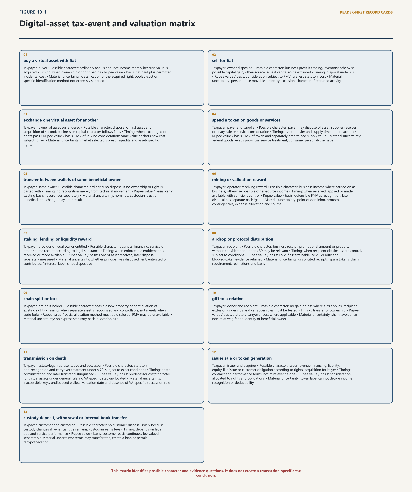
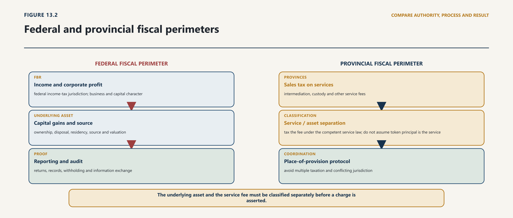

Chapter Thirteen · Part 3
Chapter 13 — Fiscal Order: Recognition, Taxation, Disclosure and Public Finance
13.1 Constitutional Fiscal Competence
13.1.1 Federal income and capital taxation
13.1.2 Provincial services and other fiscal perimeters
1
Digital-asset taxation begins with legality, not with a policy desire to capture revenue. Article 77 of the Constitution permits a federal tax only by or under an Act of Parliament. Article 142 and the Federal Legislative List then allocate legislative competence: the Federation has the listed fields, including taxes on income other than agricultural income, taxes on corporations, taxes on sales and purchases of goods other than sales tax on services, and taxes on the capital value of assets subject to the constitutional text; the Provinces retain the service-tax field. A regulator cannot turn licensing guidance, a circular, a reporting form or an information-sharing agreement into a tax charge that Parliament or a competent Provincial Legislature did not enact.1
2
Section 66 of the Virtual Assets Act 2026 does not alter that position. It directs licensed virtual-asset service providers (VASPs) to comply with obligations under the “Income Tax Act, 2001” and rules and regulations made by the Federal Board of Revenue (FBR). The operative federal enactment is the Income Tax Ordinance, 2001, not an “Income Tax Act, 2001”. More fundamentally, section 66 names no taxpayer, taxable event, head of income, rate, tax base, valuation rule, source rule or withholding mechanism. It is a compliance bridge with a defective statutory citation, not an independent charge to tax.2
3
That conclusion does not make virtual-asset activity tax free. The general charging and computational rules of the Income Tax Ordinance 2001 can apply where their elements are satisfied. It means only that the legal work cannot be skipped. For each transaction the enquiry must identify: the person taxed; the event recognised; the character of the amount; its timing and Rupee value; the source and residence nexus; the deductions, losses or reliefs permitted; the return or third-party report required; and the authority for collection or enforcement.
4
Four systems must also remain separate. Tax law determines liability. Tax reporting supplies information relevant to assessment and exchange. Financial reporting represents assets, liabilities, income, expenses and uncertainty under the applicable accounting framework. Public-finance law determines where public receipts are deposited, appropriated, audited and reported. The same transfer can enter all four systems, but a reporting entry is not a tax assessment; an accounting fair value is not automatically the statutory tax value; and a fee collected by PVARA is not money available for expenditure outside the constitutional budget process.
5
The controlling fiscal principle is therefore modest but exacting: technology may change the evidence and the transaction path, but only competent legislation can change the incidence of tax.
13.2 Fiscal Recognition Without a Complete Fiscal Architecture
13.2.1 Virtual assets within broad concepts of property and assets
13.2.2 Why functional recognition is not a comprehensive statutory taxonomy
6
The Income Tax Ordinance 2001 taxes income through recognised heads. Total income is constructed from the heads of salary, income from property, income from business, capital gains and income from other sources. For digital assets, the principal contest is usually among business income under section 18, capital gain under section 37, and residual or specifically included income under section 39. The answer depends on the taxpayer’s activity and rights, not on a platform’s product label.3
7
A dealing business, market maker, broker-trader, miner operating commercially, validator service, issuer or enterprise disposing of inventory may have business receipts and allowable business expenditure under the ordinary rules. An investor disposing of property may fall within capital gains. A reward, distribution or property received without consideration may require analysis under business income or income from other sources. Salary or professional remuneration paid in tokens retains its underlying employment or service character; the payment medium does not move it into capital gains.
8
The capital-gains route contains an important qualification. Section 37 defines a capital asset as property of any kind held by a person, whether or not connected with business, but excludes stock-in-trade, depreciable or amortisable property and—subject to the collectible categories in section 38—movable property held for personal use. Section 37A separately governs specified “securities”; a virtual asset is not brought within that special regime merely because a commercial platform calls it a security token. Consequently, it would be unsafe to state that every retail token disposal generates a taxable capital gain. Where an individual establishes genuine personal use, the movable-property exclusion may disapply the section 37 capital-gain route, leaving a classification gap or another head-of-income question that requires statutory resolution.4
9
Sections 75–78 supply a wider transaction grammar. Disposal includes sale, exchange, transfer, distribution, cancellation, redemption, relinquishment, destruction, loss, expiry or surrender; acquisition begins when ownership or the relevant right begins. Cost includes consideration—using fair market value for consideration in kind—incidental acquisition and disposal expenditure, and improvements. Consideration on disposal is generally the amount received or fair market value, whichever is higher, with non-arm’s-length transactions tested at fair market value. Those rules mean that a crypto-to-crypto exchange or purchase of goods with a token can contain a disposal even though no Rupees pass through a bank.5
10
The event map below applies those provisions without pretending that unresolved questions are settled:
| Event | Taxpayer | Possible character | Timing | Rupee value / basis | Source and reporting | Material uncertainty |
|---|---|---|---|---|---|---|
| buy a virtual asset with fiat | buyer | ordinarily acquisition, not income merely because value is acquired | when ownership or right begins | fiat paid plus permitted incidental cost | record venue, wallet, counterparty, fees and residence facts | classification of the acquired right; pooled-cost or specific-identification method not expressly supplied |
| sell for fiat | owner disposing | business profit if trading/inventory; otherwise possible capital gain; other-source issue if capital route excluded | disposal under s 75 | consideration subject to FMV rule less statutory cost | residence and s 101 source facts; return/wealth trail | personal-use movable-property exclusion; character of repeated activity |
| exchange one virtual asset for another | owner of asset surrendered | disposal of first asset and acquisition of second; business or capital character follows facts | when exchanged or rights pass | FMV of in-kind consideration; same value anchors new cost subject to law | report both legs without double counting economic value | market selected, spread, liquidity and asset-specific rights |
| spend a token on goods or services | payer and supplier | payer may dispose of asset; supplier receives ordinary sale or service consideration | asset transfer and supply time under each tax | FMV of token and separately determined supply value | asset-gain record plus goods/service invoice | federal goods versus provincial service treatment; consumer personal-use issue |
| transfer between wallets of same beneficial owner | same owner | ordinarily no disposal if no ownership or right is parted with | no recognition merely from technical movement | carry existing basis; record fees separately | wallet-to-wallet reconciliation | nominee, custodian, trust or beneficial-title change may alter result |
| mining or validation reward | operator receiving reward | business income where carried on as business; otherwise possible other-source income | when received, applied or made available with sufficient control | defensible FMV at recognition; later disposal has separate basis/gain | location of enterprise, equipment and services; return/records | point of dominion, protocol contingencies, expense allocation and source |
| staking, lending or liquidity reward | provider or legal owner entitled | business, financing, service or other-source receipt according to legal substance | when enforceable entitlement is received or made available | FMV of asset received; later disposal separately measured | contract, counterparty, pool and wallet evidence | whether principal was disposed, lent, entrusted or contributed; “interest” label is not dispositive |
| airdrop or protocol distribution | recipient | business receipt, promotional amount or property without consideration under s 39 may be relevant | when recipient obtains usable control, subject to conditions | FMV if ascertainable; zero-liquidity and blocked-token evidence retained | issuer/protocol, eligibility and wallet record | unsolicited receipts, spam tokens, claim requirement, restrictions and basis |
| chain split or fork | pre-split holder | possible new property or continuation of existing rights | when separate asset is recognised and controllable, not merely when code forks | allocation method must be disclosed; FMV may be unavailable | chain, wallet, exchange support and control record | no express statutory basis-allocation rule |
| gift to a relative | donor and recipient | no gain or loss where s 79 applies; recipient exclusion under s 39 and carryover rules must be tested | transfer of ownership | statutory carryover cost where applicable | relationship evidence, deed/transaction and wallet proof | sham, avoidance, non-relative gift and identity of beneficial owner |
| transmission on death | estate/legal representative and successor | statutory non-recognition and carryover treatment under s 79, subject to exact conditions | death, administration and later transfer distinguished | predecessor cost/character for virtual assets under general rule; no VA-specific step-up located | inventory, probate/administration, keys and later disposal records | inaccessible keys, undisclosed wallets, valuation date and absence of VA-specific succession rule |
| issuer sale or token generation | issuer and acquirer | issuer revenue, financing, liability, equity-like issue or customer obligation according to rights; acquisition for buyer | contract and performance terms, not mint event alone | consideration allocated to rights and obligations | issuer residence/business/source and product disclosures | token label cannot decide income recognition or deductibility |
| custody deposit, withdrawal or internal book transfer | customer and custodian | no customer disposal solely because custody changes if beneficial title remains; custodian earns fees | depends on legal title and service performance | customer basis continues; fee valued separately | customer subledger, omnibus wallet and safeguarding reconciliation | terms may transfer title, create a loan or permit rehypothecation |
11
Gifts and succession illustrate why technical transfer and tax recognition are not synonymous. Section 75 can describe an ownership event, while section 79 can require no gain or loss and preserve character and cost in qualifying transfers, including transmission on death and specified gifts. A 2026 cost rule for inherited immovable property does not supply a corresponding virtual-asset fair-value step-up. Executors therefore need the deceased’s original acquisition, wallet and control records; a market quotation at death cannot by itself replace the statutory cost rule.6
12
The matrix is not a schedule of new taxes. It is a discipline for applying existing law and exposing the places where Parliament, FBR or a Provincial Legislature must speak more clearly.
13.3 Income, Capital Asset and Stock-in-Trade Classification
13.3.1 Income Tax Ordinance section 37 and property of any kind
13.3.2 Business income, capital gain, mining, staking and rewards
13
Distributed infrastructure does not abolish tax residence or geographical source. The Ordinance determines residence separately for individuals, companies and associations of persons. It then brings into a resident person’s total income the Pakistan-source and foreign-source amounts within the statutory framework, while a non-resident is generally within the charge for Pakistan-source income. Treaty relief, foreign-tax credit, exemptions and special regimes may modify the result; they do not permit residence to be inferred from an IP address or exchange location.7

14
For a resident business, section 101 treats business income as Pakistan-source to the extent derived from business carried on in Pakistan. For a non-resident, attribution may arise through a permanent establishment, sales through such establishment, a business connection or other specified connections. Gains on assets used in a relevant business, services, royalties, profit on debt and other categories have their own source rules. A virtual-asset analysis should therefore begin with the person and the income-producing activity: where management occurs; who contracts; where personnel and systems perform the service; whether an agent or permanent establishment acts; where rights and obligations are situated; and to what Pakistan activity income is attributable.
15
Section 101’s 2024 “significant economic presence” provisions extend the business-connection enquiry to prescribed levels of transactions in goods, services or property, including downloads of data or software, and to systematic and continuous interaction through digital means with a prescribed number of users in Pakistan. The text is relevant to foreign exchanges and platforms, but it is not a licence to tax global income by counting Pakistani app visits. The monetary or user threshold must be prescribed and met, a business connection must arise under the section, and only income attributable to the Pakistan connection is brought within the source rule.8
16
Certain attractive proxies are legally weak. The location of validating nodes does not necessarily identify the seller, service provider or owner. The situs of a private key says little where a cloud custodian, multisignature group or recovery provider participates. A domain name, downloadable app or Pakistani customer may support an evidential nexus, but none replaces the statutory source test. Conversely, a foreign-incorporated platform with management, personnel, agents or sustained service operations in Pakistan cannot defeat the source enquiry merely by settling transactions on a borderless ledger.
17
The minimum cross-border file should record:
18
taxpayer residence and the legal basis for it;
19
counterparty and beneficial-owner identity where required and obtainable;
20
contracting entity, customer terms and place of management;
21
service-performance and personnel locations;
22
permanent-establishment, agent and significant-economic-presence facts;
23
wallet, custodian and platform roles without treating them as conclusive situs;
24
gross receipts, attributable functions, assets, risks and expenses;
25
foreign tax paid and treaty relied upon; and
26
the method used to allocate a multi-jurisdictional transaction.
27
Withholding must be tested separately. A payment to a non-resident may fall within section 152 or another provision only if the statutory payment, payer, recipient and source conditions are satisfied. Converting the payment into a token does not avoid an otherwise applicable duty; it also does not create a withholding duty absent those elements. The proposed corrective regime should specify how an in-kind payer determines the amount, funds the withholding, reports the asset transfer and handles a transaction where no fiat is available, without imposing confiscatory over-withholding on gross transaction value.
13.4 FBR Declaration and Wealth Disclosure
13.4.1 Returns, wealth statements and self-assessment
13.4.2 Disclosure as compliance evidence rather than a universal ruling, title confirmation or regulatory approval
| Event | Classification and taxpayer question | Timing and valuation question | Loss, source and legal vehicle |
|---|---|---|---|
| fiat acquisition or disposal | asset held personally, as trading stock, investment or business receipt | acquisition/disposal time; Rupee value; fees and basis | residence/source and capital/revenue character; Income Tax Ordinance or guidance within it |
| crypto-to-crypto exchange | whether disposal and acquisition are recognised events | value of both legs at the legally selected time and source | basis carry-over or realisation; primary fiscal rule required |
| payment for goods or services | payer disposal and recipient business receipt | value when supplied, transferred, accepted or settled | income and applicable federal/provincial sales-tax treatment |
| mining or validation reward | operator, employee, contractor or business recipient | recognition at entitlement, receipt or disposal; network-value source | deductible electricity/equipment and source nexus; income-tax and provincial interface |
| staking reward | ownership, delegated validation, service or investment return | accrual, receipt, claimability and disposal | slashing, locked rewards and loss treatment; fiscal rule or binding guidance |
| airdrop or fork | recipient identity and character of unsolicited or conditional receipt | control, claimability and reliable market value | nil/allocated basis, later disposal and loss; primary or authorised administrative rule |
| lending or liquidity provision | lender, borrower, pool participant and fee/yield character | accrual, receipt, token substitution and valuation | bad debt, impermanent loss, liquidation and cross-border source |
| token issuance | issuer receipt, capital contribution, advance, revenue or liability | issue, vesting, performance and redemption stages | reserve deductions, refunds and issuer residence/source; primary law plus accounting alignment |
| theft, loss or inaccessible key | beneficial owner and proof of loss | date irrecoverability becomes sufficiently established | deduction, capital loss, later recovery and evidential threshold |
| gift, inheritance or same-owner transfer | whether beneficial ownership changed | value and basis continuity at transfer/death | anti-avoidance, succession and record rule; express legislative treatment where needed |
28
Volatility is not the legal reason valuation is difficult. The deeper problem is that “price” can refer to an order-book quote, executed trade, index, oracle, thin-liquidity pool, related-party transfer, locked token, redeemable claim or manipulated market. Section 68 uses an open-market fair-market-value standard and permits the Commissioner to determine value where it is not ordinarily ascertainable. Sections 69, 76 and 77 connect receipt, cost and consideration to the tax computation. These rules provide a foundation, but not a complete virtual-asset valuation protocol.9
29
A defensible methodology should apply a hierarchy:
30
use the actual arm’s-length transaction price on a reliable venue where it represents the rights transferred;
31
where that price is unavailable or distorted, use a documented volume-weighted or time-consistent composite from independent liquid venues;
32
value a redeemable claim by reference to enforceable redemption rights only after testing issuer credit, reserve access, fees, delay and restrictions;
33
for illiquid, vested, locked or rights-bearing tokens, apply an appropriate valuation technique and disclose restrictions, assumptions and uncertainty; and
34
where no reliable value can be established, preserve the evidence, state the uncertainty and use the statutory determination route rather than inventing precision.
35
The policy must fix a consistent valuation time and time zone. A daily closing price is administratively simple but can be arbitrary for intraday exchanges. Exact transaction-time valuation is more accurate but costly for high-frequency activity. A proportionate rule can require actual executed value where available, allow a prescribed daily method for qualifying retail volumes, and require transaction-time or independently substantiated valuation for related-party, illiquid or material transactions. The selected source, timestamp, asset pair, exchange rate, units, fees and fallback must be reproducible.
36
Section 71 converts foreign currency and Rupees at the State Bank rate on the relevant date; it does not classify every crypto-asset as foreign currency. A sound rule would establish fair value in reliable fiat and then translate it into Rupees at the lawful State Bank rate.
37
Basis must follow units through their life. Each taxpayer should maintain, at minimum: acquisition date and time; quantity and asset identifier; chain and contract address where relevant; legal rights; wallet or account; counterparty or venue; consideration and incidental fees; valuation source; transaction identifier; beneficial owner; tax character; transfer history; and disposal proceeds. Where units are pooled, the law or rules should choose a basis convention—such as specific identification supported by immutable records or a prescribed average—and prevent a taxpayer from changing methods opportunistically after prices move. Wrapped assets, bridges, migrations and redenominations require continuity records; they should not be assumed to be taxable or non-taxable merely from a new contract address.
38
Receipt under section 69 includes amounts actually received, applied on behalf of a person or made available. Rewards subject to a lock, slashing, unbonding period, governance condition or unresolved protocol claim require a facts-based control analysis. Recognition before the taxpayer can transfer or realise any enforceable benefit can tax an amount that never becomes available; indefinite deferral after control is obtained can conceal income. The record should identify the precise legal and technical event that made the reward available.
39
The Ordinance generally requires taxpayer records for six years after the relevant tax year, with longer retention where proceedings remain pending. Companies have separate books-and-records duties and a ten-year retention period. VASPs should adopt the longer applicable period and preserve the raw transaction ledger, customer subledger, pricing inputs and method versions—not only a year-end statement.10 Records must reconcile legal ownership, customer account, beneficial owner and technical movement so that neither self-transfers nor internal platform transfers are misclassified.
13.5 Unexplained Sources and Section 111
13.5.1 Acquisition cost, source of funds and documentary continuity
13.5.2 Legacy holdings, offshore venues and evidential exposure
40
Tax classification should follow the actor’s function and the rights created. A single organisation may perform several functions, and each stream may have a different base.
41
Individuals and investors. Frequency, organisation, intention, financing, holding period, use of specialised systems and relation to an existing business can inform whether activity is a business or investment, but no single factor should be treated as conclusive. A holder must separately identify acquisitions, disposals, income rewards and personal-use assertions. Wealth-statement and foreign-asset obligations can exist even where no disposal gain arises.
42
VASPs. An exchange may earn trading commissions, spreads, listing fees, custody fees, withdrawal fees, staking commissions, data revenue and gains or losses on proprietary inventory. Customer gross trading volume is not the VASP’s income. Customer assets held without beneficial title should not be booked or taxed as the custodian’s own property merely because the custodian controls private keys. Proprietary positions and customer safeguarding balances require separate ledgers.
43
Brokers, dealers and market makers. A person trading as principal may hold stock-in-trade and recognise business profits; an agent ordinarily recognises commission rather than the customer’s gross consideration. A platform acting as both principal and agent must disclose the capacity in each transaction and prevent internal pricing from shifting profit between related entities or jurisdictions.
44
Issuers. Token issuance is not one tax event. A sale can represent an immediate supply, advance consideration for future performance, a borrowing or redeemable liability, a membership or governance right, an equity-like interest, a bundled arrangement or a transfer of property. Income recognition, deductions and sales-tax treatment follow the enforceable rights and performance obligations. Treasury tokens minted but not transferred do not automatically produce revenue; proceeds received for promised services do not automatically become tax-free capital.
45
Miners and validators. Commercial block-production or validation rewards may be business income, with ordinary-law treatment of allowable expenses. The legal recipient must be distinguished from pool operator, delegator and infrastructure host. Validator commission and delegator reward can have different character; later disposal is a separate event using the recognition value as basis.
46
Staking, lending and decentralised-finance arrangements. Labels such as “yield”, “interest”, “liquidity mining” or “staking” do not determine character. The enquiry asks whether the taxpayer transferred title, lent property, supplied a service, entered a partnership-like arrangement, received compensation for risk, disposed of one right for another, or merely delegated validation power. Protocol governance and smart-contract execution provide evidence of terms but do not replace the legal relationship.
47
Custodians and fiduciaries. The tax and accounting result turns on customer title, segregation, reuse rights, insolvency treatment, restitution obligation and beneficial entitlement. If terms permit the custodian to use assets and return an equivalent, the arrangement may be economically and legally closer to a loan than a bailment or safeguarding service. If title remains with the customer, platform control should not transform customer property into platform revenue.
48
Companies, funds, trusts and estates. Entity form, tax status and governing instrument matter. A company does not receive individual personal-use treatment. A fund or trust requires identification of the taxable person, beneficiaries and distributions. On death, the legal representative must secure wallet access and preserve basis; inheritance and later disposal are separate. The VAA creates no estate or succession tax charge.11
49
Actor-based rules should remain technology neutral but not evidence blind. They should require the information peculiar to virtual assets—wallets, contract rights, keys, transaction identifiers, chain events and venue pricing—only because those facts help apply the legal categories.
13.6 Valuation, Cost, Disposal and Section 75A
13.6.1 Fair value, basis, timing and exchange records
13.6.2 Bank or digital payment trails for asset acquisition and their limitations
50
A reporting system should make correct liability easier to determine; it should not substitute mass data for legal design. The existing Ordinance contains return, wealth-statement, foreign-income and foreign-asset, withholding-statement, information, record, audit and confidentiality machinery. It does not contain a complete virtual-asset reporting code.12
51
There is no general authority in the material inspected for a VASP to withhold tax from every virtual-asset disposal. Existing withholding sections can apply where their own conditions are met—for example, a relevant payment for goods or services or a payment to a non-resident—but a regulator should not direct a platform to deduct from gross customer proceeds without a clear charging and collection provision. Gross withholding is especially hazardous where only net profit is taxable, basis is held on another platform, the transfer is between the same owner’s wallets, or the customer has a loss.
52
Sections 165B and 165C must not be collapsed. Section 165B authorises specified information arrangements by financial institutions for automatic exchange under bilateral or multilateral instruments, with reportable-person and financial-institution terms taken from the Income Tax Rules. Section 165C requires quarterly information from online marketplaces, payment intermediaries and couriers in relation to digitally ordered goods and services. A VASP is not automatically within a full CARF regime merely because it is a digital platform, and a token transfer is not automatically a digitally ordered good or service.13
53
The domestic reporting layer should be enacted around a minimum, purpose-bound record:
54
taxpayer and controlling-person identity, residence and tax identification number;
55
licensed entity, service and account identifiers;
56
asset identifier, units and legal category used for tax treatment;
57
acquisition, disposal, transfer and reward event type;
58
fiat proceeds or fair market value, currency, valuation time and method;
59
fees, withholding where lawfully required and cost information actually held;
60
counterparty or destination category where required, distinguishing self-hosted wallets from unidentified ownership; and
61
correction, reconciliation and audit history.
62
FBR should receive tax information; PVARA should receive licensing, prudential and conduct information within its mandate. Section 17 of the VAA permits information sharing with FBR, but the exchange should be governed by a published legal instrument or controlled protocol specifying fields, purposes, security, retention, onward disclosure, corrections, access logging and responsible officers. PVARA need not receive every tax return, and FBR need not receive every cybersecurity alert. A common entity identifier and controlled cross-reference are better than indiscriminate database replication.
63
Taxpayer administration must permit correction. A customer should be able to obtain a machine-readable annual statement, challenge wrong identity or basis attribution, mark a self-transfer, supply off-platform cost evidence and receive a corrected report before assessment where practicable. FBR should publish how duplicates across VASPs, chain analytics and foreign CARF reports are reconciled. An address should not be attributed to a taxpayer solely because an analytics vendor assigns a probability score.
64
Sections 174 and 176 permit records and information demands, while section 216 protects tax information subject to statutory exceptions. Those powers require audit trails, role-based access and reasoned use. Data obtained for automatic exchange should remain limited to lawful tax purposes and protected against unauthorised disclosure. Enforcement must follow assessment, notice, evidence and appeal procedures; a reported gross transfer is not self-proving taxable income.14
13.7 P2P Banking Evidence
13.7.1 Fiat transfer records and counterparty identification
13.7.2 Why banking involvement does not prove the token leg, legality, ownership or finality
65
Pakistan has no single national sales-tax answer for a VASP transaction. The Constitution reserves federal sales tax on goods and excludes sales tax on services from the relevant federal entry. The Sales Tax Act 1990 charges federal sales tax on taxable supplies of goods by a registered person in the course of taxable activity and on imported goods. Its definition of goods includes movable property but excludes actionable claims, money, stocks, shares and securities. Whether a particular virtual asset is a “good” cannot be resolved without classifying the legal rights; the Act contains no express virtual-asset taxonomy in the text searched.15
66
The service leg is usually more immediate. Exchange, brokerage, dealing commission, custody, administration, advice, platform access, data, software, validation support and management may fall within one or more provincial scheduled-service categories. Punjab, Sindh, Khyber Pakhtunkhwa and Balochistan operate distinct services-tax laws and instruments. Their schedules, descriptions, rates, exemptions, registration thresholds, place-of-provision rules, reverse-charge rules and notifications must be checked for the period and facts. A federal VASP licence neither exempts a service nor determines the province entitled to tax it.16
67
The Khyber Pakhtunkhwa Act illustrates the structure without supplying a nationwide answer. It taxes services listed in its schedule, contains origin and consumption rules, can impose reverse charge for services originating outside the Province or Pakistan, values in-kind consideration by reference to open-market value, and lists categories including financial, brokerage, commission, computer/software, digital or IT-based, online-marketplace and management services. Rates differ by scheduled category and have been amended. It would therefore be unsafe to select one label or rate for all VASP services without a ruling on the exact service and current instrument.17
68
Each transaction should be disaggregated into at least:
69
transfer of the underlying asset;
70
exchange or brokerage commission;
71
custody or safeguarding fee;
72
technology, data or platform fee;
73
advisory, management or staking commission; and
74
any imported or intercompany service.
75
Bundling does not make the components disappear. The contract and invoice should allocate consideration on an arm’s-length basis and identify the place and recipient of each service. Payment in tokens requires fair-value invoicing; it does not remove services tax.
76
Coordination should be administrative rather than constitutionally assimilative. FBR and the provincial authorities can agree a common taxpayer identifier, registration-status exchange, invoice fields, audit-coordination protocol and conflict-escalation route. A lead audit may collect evidence once, but each authority must issue any demand under its own competent law. Place-of-provision conflicts should have a rapid inter-authority determination process so that one service is not taxed by several provinces merely because the customer, server, office and wallet are in different places.
77
PVARA can require a licensee to maintain jurisdictional transaction and fee data and to attest compliance. It should not decide provincial tax liability or prescribe a uniform services-tax rate. The durable settlement is a federal-provincial protocol endorsed through the appropriate intergovernmental mechanism, with published data fields and preservation of each legislature’s competence.
13.8 Residence, Source and Cross-Border Activity
13.8.1 Offshore platforms, non-residents and foreign income
13.8.2 FERA, remittance and reporting interactions
78
Tax accounting and financial reporting answer different questions. The Companies Act 2017 requires companies to keep books and other records giving a true and fair view and covering receipts, payments, sales, purchases, assets and liabilities. Financial statements must give a true and fair view, comply with standards notified by the Securities and Exchange Commission of Pakistan (SECP), and follow the applicable Schedule. Auditors must work under adopted auditing standards, assess whether adequate records exist, reconcile the statements to those records and report whether the required view is given.18
79
The IFRS Interpretations Committee’s June 2019 agenda decision is important but narrow. For the cryptocurrency fact pattern it considered—a digital or virtual currency on a distributed ledger, not issued by a jurisdiction or other party and not giving rise to a contract between the holder and another party—the holding is not cash and not a financial asset. IAS 2 applies when it is held for sale in the ordinary course of business; otherwise IAS 38 applies. A commodity broker-trader within IAS 2 measures qualifying inventory at fair value less costs to sell. The decision also points to fair-value, judgement and subsequent-event disclosures.19
80
It does not establish that all digital tokens are IAS 38 intangibles. A tokenised share or debt instrument can create contractual or equity rights; a redeemable stablecoin can create an issuer claim; a platform balance can be a receivable; an issuer can owe future goods or services; and a custodian can hold a customer asset with a corresponding safeguarding or restitution obligation. Classification requires the contract, governing law and economic rights, followed by the applicable notified standard—potentially including IFRS 9, IAS 32, IFRS 15, IAS 2, IAS 37 or another standard.
81
The financial statements of a VASP or issuer should make the following legible:
82
proprietary assets separately from customer assets and any related safeguarding liability;
83
custody model, segregation, reuse or rehypothecation rights and insolvency exposure;
84
asset and liability classification and the reason for it;
85
valuation technique, principal market, price source, liquidity, restrictions and sensitivity;
86
revenue by principal/agent capacity and material service stream;
87
issuer redemption, reserve, performance and contingent obligations;
88
staking, lending, protocol, counterparty and concentration exposures;
89
related-party transactions, subsequent events, impairment and going-concern uncertainty; and
90
current and deferred tax positions and material uncertain tax treatments under the applicable framework.
91
On-chain evidence strengthens audit but does not complete it. A signed message can support control of a key; it does not prove legal title, beneficial ownership, absence of an undisclosed obligation or completeness of all wallets. Proof of reserves can show selected assets at a point in time; without complete customer liabilities, legal ownership, encumbrances, subsequent movement and independent controls it cannot establish solvency. The audit should reconcile customer-level subledgers to omnibus wallets, inspect terms and title, test key governance and access, confirm external custodians, assess valuation sources, search for omitted wallets and liabilities, and test movements before and after the reporting date.20
92
The accounting ledger should feed but not dictate the tax return. Reconciling items should identify different recognition timing, disallowed or capital expenditure, tax basis, unrealised accounting movements, withholding and services tax. A regulator should not require one “crypto accounting policy” across instruments with materially different rights.
13.9 Treatment by Actor and Function
13.9.1 Holder, trader, miner, validator, issuer, employee and service provider
13.9.2 DeFi, airdrops, forks and tokenised claims
93
The OECD Crypto-Asset Reporting Framework (CARF) is an annual standardised automatic-exchange system for tax information. It is not a tax charge, a licensing regime or a declaration that every reported transfer is taxable. Its purpose is to give participating tax administrations consistent information about relevant crypto-asset activity that can escape conventional financial-account reporting.21
94
CARF places reporting and due-diligence duties on a Reporting Crypto-Asset Service Provider (RCASP): a person that, as a business, provides a service effectuating exchange transactions for or on behalf of customers, including by acting as counterparty or intermediary or by making available a trading platform. Jurisdictional nexus can arise through tax residence, incorporation coupled with reporting obligations, management, a regular place of business or a branch, subject to coordination rules that prevent duplicative reporting.
95
For reportable users and controlling persons, the standard collects identity, address, jurisdiction of residence, tax identification number and, for individuals, date of birth, subject to its detailed rules. The RCASP reports its own identity and annual aggregate information by asset type. Categories include acquisitions against fiat, disposals against fiat, exchanges for other relevant crypto-assets valued at fair market value, reportable retail payments, and other transfers, including transfers to wallet addresses not known to be associated with another service provider. Due diligence relies on valid self-certifications tested against AML/KYC and other information, with change-of-circumstance controls. Documentation and data must generally be retained for at least five years after the reporting period.22
96
That design has consequences for Pakistan. A domestic CARF law would need to define:
97
relevant crypto-assets, excluded central-bank digital currencies and specified electronic-money products, and the relationship with CRS financial assets;
98
RCASP activities and Pakistan nexus, including branches and duplicate-reporting relief;
99
reportable and excluded persons and controlling persons;
100
due-diligence, self-certification, reasonableness and change-of-circumstance duties;
101
transaction categories, valuation currency, aggregation, corrections and nil reporting;
102
record retention, audit, sanctions proportionate to culpability and a right of review;
103
confidentiality, permitted use, data-subject correction and cybersecurity controls; and
104
FBR’s authority to receive, validate, exchange and protect the information.
105
PVARA should support the perimeter by giving FBR authoritative licence, service, branch and legal-person data. FBR should own tax reporting, due-diligence interpretation and international exchange. Joint rules should map PVARA’s “VASP” categories to CARF’s function-based “RCASP” test; the terms overlap but are not necessarily coextensive.
106
International exchange requires more than domestic data collection. The CARF Multilateral Competent Authority Agreement (MCAA) operates on the underlying Convention or another valid exchange basis and requires notifications concerning domestic implementing law and commencement, reciprocal status, permitted use, transmission and encryption, personal-data safeguards, confidentiality and intended exchange partners. A bilateral exchange relationship becomes active only after both competent authorities have completed the specified steps and listed each other. Information-security and sanction controls are substantive preconditions, not launch-day paperwork.23
107
The OECD Global Forum’s official commitment list, last updated 23 June 2026, names 46 jurisdictions undertaking first exchanges by 2027, 29 by 2028, the United States by 2029, and five relevant jurisdictions not yet committed. Pakistan does not appear on that list. The narrow conclusion is that no Pakistan commitment is evidenced by that document as at its stated date. It does not establish rejection, prevent a later commitment or prove that domestic preparatory work has not occurred.24
108
Pakistan should use a staged path:
109
perform a legal and data-gap assessment against the CARF rules and XML schema;
110
enact primary authority and rules only after defining scope, safeguards, sanctions and appeal;
111
register and map RCASPs using PVARA and FBR data;
112
run controlled test reporting with synthetic and then reconciled historical data;
113
obtain an independent confidentiality and information-security assessment;
114
sign or activate the relevant international instrument and make the required notifications;
115
select exchange partners only after reciprocal legal and safeguard checks; and
116
begin production with correction, duplicate-suppression and taxpayer access mechanisms.
117
The European Union’s DAC8 is adjacent but distinct. According to the European Commission, its crypto-asset reporting rules apply from 1 January 2026, with reporting for 2026 and exchange by 30 September 2027. It covers domestic and cross-border reportable activity and can require a non-EU crypto-asset operator not authorised under MiCA to register in one Member State. DAC8 is not Pakistani law and does not confer a Pakistan licence. It matters operationally where a Pakistan-connected provider has EU-reportable users or an EU registration obligation, and because its data fields should be mapped to CARF to avoid incompatible duplicative systems.25
118
Transparency must remain proportionate. A foreign report can be wrong, duplicated or based on a different residence determination. FBR should match reports to taxpayers using more than a name, notify material use where law requires, permit correction and assess tax under Pakistan’s charging provisions. CARF should close information gaps; it should not convert gross flows into presumed concealed income.
13.10 Withholding, Reporting and Tax Administration
13.10.1 FBR powers and third-party information
13.10.2 VASP obligations and Virtual Assets Act section 66
119
The VAA creates a lapsable PVARA Fund and identifies sources including Government grants, licence and supervision fees, fines, penalties, service charges and other receipts. It subjects the Fund to the Public Finance Management Act 2019, requires budgeting and accounts, and provides for Auditor-General and chartered-accountant audit and annual reporting. The public-finance statute requires self-generated revenue of public entities to enter the Treasury Single Account, requires non-tax revenue to be levied under relevant law, directs collection into the Federal Consolidated Fund, and prevents retention or appropriation outside the constitutional budget mechanism.26
120
Three fiscal rules follow. First, licence and supervisory fees should recover the efficient cost of regulation and reflect risk or activity where law permits; they should not operate as disguised taxes. Second, penalties should deter and correct misconduct, not become a budget target that rewards enforcement volume. Third, PVARA cannot treat the gross receipts named in section 14 as an independent spending authority.
121
The word “lapsable” should therefore be clarified through the statute and the applicable public-finance process rather than converted into an automatic constitutional violation. The legal account must distinguish: an annual parliamentary appropriation that lapses under its own budget authority; own-source statutory receipts that must enter the Treasury Single Account or Federal Consolidated Fund as applicable; any lawfully carried Fund balance; authority to commit and spend; and the separate duties of accounts, Auditor-General audit, external audit and annual reporting. The destination and treatment of an unspent balance should be explicit.
122
Revenue forecasting must reject gross trading volume as a tax base. Volume includes acquisitions, self-transfers, market-making turnover, crypto-to-crypto exchanges, wash activity, losses and customer assets that are not VASP income. A defensible annual model is:
123
Net fiscal yield = Σ[(realised taxable base by income head × effective rate) + (taxable service-fee base by province × applicable rate)] × compliance-and-collection factor − lawful credits, refunds and loss offsets − incremental administration and compliance cost.
124
The model should publish low, central and high cases for active taxpayers, realised gains and losses, business margins, fee take-rates, provincial allocation, cost-basis completeness, voluntary compliance, audit yield, bad debt, refunds and implementation cost. No Rupee forecast is credible until FBR and the Provincial Authorities can distinguish customer flow from taxable income and can reconcile basis across domestic, self-hosted and foreign accounts.27
125
Administrative cost includes FBR and provincial system development, data security, specialist valuation and audit capacity, dispute resolution, taxpayer support, international-exchange testing and independent assurance. Private compliance cost includes identity and residence refresh, valuation, statement correction, systems integration and retention. Rules should permit simplified valuation and aggregated reporting for genuinely low-risk retail activity while preserving transaction-level records, and should provide safe correction before penalties for reasonable first-year errors.
126
The fiscal dashboard should report registrations, timely and corrected reports, unmatched records, basis completeness, assessment yield net of reversals, refund delay, appeal outcomes, security incidents, cost per usable report and taxpayer-support resolution. A high volume of data or penalties is not evidence of an effective tax system.
13.11 Accounting, Audit and Financial Statements
13.11.1 Recognition, measurement and impairment
13.11.2 Custody, reserves, liabilities and disclosures
127
Pakistan’s current position is neither a tax vacuum nor a complete digital-asset tax regime. General federal and provincial rules can reach many receipts, gains and services. Yet the operative texts inspected do not expressly classify virtual assets, resolve the personal-use movable-property problem, prescribe a cost-basis convention, convert crypto-to-crypto and in-kind events into a consistent reporting rule, create general VASP withholding, or implement CARF. Section 66 acknowledges tax compliance while leaving those questions untouched and naming the principal income-tax enactment incorrectly.28
128
Fiscal implementation should proceed in the following order.
129
The sequence matters. Reporting before classification produces large but ambiguous datasets. Withholding before basis rules taxes turnover rather than income. International exchange before correction and security controls exports errors and risk. A durable fiscal regime instead begins with lawful incidence, converts rights and events into reproducible records, gives each authority only the information and power it needs, and subjects revenue itself to public law.
130
That is the fiscal meaning of the treatise’s governing thesis. Code can show that value moved. Accounting can represent what an entity controls or owes. Reporting can tell a tax administration where to enquire. None can answer the constitutional question—who may impose what burden, on whom and under which law—without legislation whose authority, base and remedy remain legible.
13.12 CARF, DAC8 and International Tax Transparency
13.12.1 Reporting architecture and exchange of information
131
The OECD Crypto-Asset Reporting Framework and the European Union's DAC8 illustrate the emerging international architecture for identifying reportable users, collecting transaction and asset information and exchanging it across tax administrations. They are comparative and cooperative frameworks, not self-executing Pakistani charging provisions. Domestic implementation requires a competent legal instrument that identifies reporting persons, covered assets and transactions, due-diligence standards, data fields, retention, confidentiality, exchange authority and remedies for error.
132
Pakistan should connect any implementation to its existing tax-information, AML, data-protection and treaty machinery without conflating their purposes. Tax reporting is not a substitute for suspicious-transaction reporting, and protected AML information cannot be repurposed merely because it is useful. The administration should minimise duplicate collection, publish schemas and correction procedures, and establish secure exchange and access controls. Cross-border information is valuable only when its provenance, meaning and lawful use can be explained.
13.12.2 Why tax transparency is not market licensing
133
Registration with a tax authority, inclusion in an exchanged report or payment of tax does not confer a PVARA licence, validate title, prove lawful source, authorise foreign-exchange activity or immunise past conduct. The reverse is also true: a regulatory licence does not settle tax classification, valuation, source, withholding or disclosure. These systems may use common identifiers and coordinated data standards, but each legal consequence must remain tied to its own statute and decision-maker.
13.13 Public Revenue and Compliance Cost
13.13.1 Fiscal yield, administrative capability and proportionality
134
A digital-asset tax regime should be judged by net public value rather than nominal rates. Revenue estimates must account for volatility, valuation disputes, offshore activity, information gaps, administrative cost and behavioural response. Excessive complexity may drive activity outside observable channels while producing little collectible revenue. Under-enforcement, however, shifts burdens to compliant taxpayers and weakens the integrity of the ordinary tax system.
135
Proportionate administration distinguishes occasional holders from professional traders, issuers, custodians, miners and platforms. De minimis rules, simplified valuation methods and clear loss treatment may reduce cost where authorised by law. High-risk intermediaries can bear more extensive reporting and record duties. Any distinction must have an enacted basis, rational criteria and a review route; administrative convenience cannot create an extra-statutory tax or exemption.
13.13.2 A lawful future tax taxonomy and any expressly enacted regularisation mechanism
136
Future reform should state how principal actor types are treated, when a disposal or income event occurs, how cost and value are established, how token-to-token transactions and rewards are handled, how losses and business inventory are treated, and which reporting or withholding duties attach to intermediaries. It should also reconcile federal income and capital taxation with constitutionally competent provincial taxes on services and other local consequences.

137
Any regularisation mechanism must be express legislation, not an inference from filing a return, declaring wealth or paying a charge. It would need defined eligibility, disclosure, valuation, tax and penalty consequences, exclusions for criminal proceeds and sanctions exposure, information-use rules, a fixed period and coordination with investigation authorities. No general virtual-asset amnesty is assumed in the current law. Fiscal compliance regularises only what the governing enactment expressly says it regularises.
Chapter 13 Conclusion and Standalone Contribution
138
Fiscal disclosure may create evidence and tax consequences, but it does not by itself establish title, regulatory legality, amnesty or freedom from foreign-exchange and financial-perimeter law.
139
PART IV — DIGITAL SYSTEMS, INSTITUTIONS, RIGHTS AND REMEDIES
140
Independent-use note. This paper is Chapter 13 of Code, Law, and Capital: Digital Assets, Legal Authority and Pakistan's Regulatory Order by Khurram Chughtai. It states the law and evidence to 21 August 2026 and should be cited with its chapter title and version.
Chapter 13 Selected Authorities and Notes
Footnotes
- ↑ Constitution of the Islamic Republic of Pakistan, arts 77, 78 and 142 and Fourth Schedule, Federal Legislative List entries 47–50, official Fourteenth Edition amended through 21 November 2025.
- ↑ Virtual Assets Act 2026 (Act No XIII of 2026) (‘VAA’), s 66; Income Tax Ordinance 2001, official FBR consolidation amended up to 30 June 2026. FBR maintains the current consolidation category at <https://fbr.gov.pk/Categ/Income-Tax-Ordinance/326> accessed 16 August 2026.
- ↑ Income Tax Ordinance 2001, ss 9–11, 18, 37 and 39.
- ↑ Income Tax Ordinance 2001 (n 3), s 37(5), including the exclusions for stock-in-trade and movable property held for personal use, and s 37A. Section 38(5) separately addresses specified capital assets including collectibles; no virtual-asset inclusion was located.
- ↑ Income Tax Ordinance 2001 (n 3), ss 75–78, including disposal and acquisition, cost, consideration and non-arm’s-length transactions.
- ↑ Income Tax Ordinance 2001 (n 3), ss 39(1)(la), 75, 76 and 79. The Finance Act 2026 inserted a special inherited-immovable-property cost rule; no corresponding virtual-asset step-up was located in the consolidation inspected.
- ↑ Income Tax Ordinance 2001 (n 3), ss 11 and 81–84 and the Pakistan-source rules in s 101. Treaty, exemption, foreign-tax-credit and special-regime consequences require taxpayer-specific analysis.
- ↑ Income Tax Ordinance 2001 (n 3), s 101(3A)–(3B), inserted by the Finance Act 2024. The statutory text makes the transaction amount and digital-user level subject to prescription and retains attribution to the business connection.
- ↑ Income Tax Ordinance 2001 (n 3), ss 68–71 and 76–78. Section 71 is a foreign-currency/Rupee conversion rule and is not cited as classifying a virtual asset as foreign currency.
- ↑ Income Tax Ordinance 2001 (n 3), ss 174 and 176; Companies Act 2017, s 220(5).
- ↑ Income Tax Ordinance 2001, ss 18, 37, 39 and 79; VAA (n 2), s 66. The conclusion is confined to the VAA: no estate or succession tax charge is created by that Act.
- ↑ Income Tax Ordinance 2001, ss 114, 116, 116A, 165, 174, 176 and 216.
- ↑ Income Tax Ordinance 2001 (n 12), ss 165B–165C. Section 165B takes defined terms from Chapter XIIA of the Income Tax Rules and confines received information to tax and related purposes; section 165C addresses digitally ordered goods and services through specified intermediaries.
- ↑ Income Tax Ordinance 2001 (n 12), ss 174, 176 and 216; VAA (n 2), s 17. The chapter does not treat the information-sharing power as an independent tax-assessment or public-disclosure power.
- ↑ Constitution of Pakistan, art 142 and Federal Legislative List entry 49; Sales Tax Act 1990, ss 2(12), 2(35) and 3, official FBR consolidation amended to 30 June 2026. FBR maintains the official category at <https://fbr.gov.pk/categ/sales-tax-act/301> accessed 16 August 2026.
- ↑ Punjab Revenue Authority, Punjab Sales Tax on Services Act 2012 <https://reg.pra.punjab.gov.pk/ptms/SalesTaxAct2012.aspx>; Sindh Revenue Board, ‘Acts, Rules and Amendments’ <https://www.srb.gos.pk/srb/acts-rules-amendments/>; Khyber Pakhtunkhwa Revenue Authority, ‘Acts’ <https://kpra.gov.pk/acts/>; Balochistan Revenue Authority, official services-tax FAQ and legislation gateway <https://bra.gob.pk/FAQs.aspx>, all accessed 16 August 2026. Current schedules, notifications and rates must be checked for the transaction period.
- ↑ Khyber Pakhtunkhwa Sales Tax on Services Act 2022, ss 3–15 and First and Second Schedules, official copy updated through the Finance Act 2024. The cited schedule demonstrates potentially relevant categories and differing rates; it is not a classification ruling for a particular VASP.
- ↑ Companies Act 2017, ss 220, 225 and 249 and Fourth Schedule, General Requirements.
- ↑ IFRS Interpretations Committee, ‘Holdings of Cryptocurrencies’ (Agenda Decision, June 2019), reproduced in IFRS Foundation, Compilation of Agenda Decisions—Volume 1 (April 2021) 42–44.
- ↑ Companies Act 2017, s 249; Fourth Schedule, General Requirements. The audit procedures stated in the text are applications of the statutory record, agreement and true-and-fair-view duties to the custody facts, not a representation that a token-specific Pakistani auditing standard was located.
- ↑ OECD, International Standards for Automatic Exchange of Information in Tax Matters: Crypto-Asset Reporting Framework and 2023 update to the Common Reporting Standard (OECD 2023), CARF introduction, Rules and Commentary <https://www.oecd.org/en/publications/international-standards-for-automatic-exchange-of-information-in-tax-matters_896d79d1-en.html> accessed 16 August 2026.
- ↑ OECD, International Standards for Automatic Exchange of Information in Tax Matters: Crypto-Asset Reporting Framework and 2023 update to the Common Reporting Standard (OECD 2023) (n 21), CARF Rules, ss I–IV, especially reporting requirements, due diligence, five-year documentation rule and definitions of Relevant Crypto-Asset, Reporting Crypto-Asset Service Provider, Relevant Transaction, Crypto-Asset User and Controlling Persons.
- ↑ OECD, International Standards for Automatic Exchange of Information in Tax Matters: Crypto-Asset Reporting Framework and 2023 update to the Common Reporting Standard (OECD 2023) (n 21), CARF MCAA ss 1–8 and Commentary, especially s 7 notifications and bilateral activation; OECD, ‘Multilateral Competent Authority Agreement on Automatic Exchange of Information pursuant to CARF’, official full text <https://www.oecd.org/en/publications/international-standards-for-automatic-exchange-of-information-in-tax-matters_896d79d1-en/full-report/component-9.html> accessed 16 August 2026.
- ↑ OECD Global Forum, ‘Jurisdictions committed to implement the Crypto-Asset Reporting Framework (CARF) in time to commence exchanges in 2027, 2028 or 2029’ (last updated 23 June 2026). Pakistan does not appear in any of the four categories on the official one-page list inspected.
- ↑ European Commission, ‘DAC8’ <https://taxation-customs.ec.europa.eu/taxation/tax-transparency-cooperation/administrative-co-operation-and-mutual-assistance/directive-administrative-cooperation-dac/dac8_en> accessed 16 August 2026.
- ↑ VAA (n 2), ss 14–15; Public Finance Management Act 2019, ss 36–40C, official consolidation amended to 30 June 2024; Constitution, arts 78–83.
- ↑ This is the Author’s analytical forecasting framework. It is not an estimate of current Pakistan revenue and must not be populated without verified inputs and disclosed assumptions.
- ↑ VAA (n 2), s 66; Income Tax Ordinance 2001; Sales Tax Act 1990. The bounded negative search was completed on 16 August 2026 against the sources cited in this chapter; non-location is not proof that no later ruling or subordinate instrument exists.